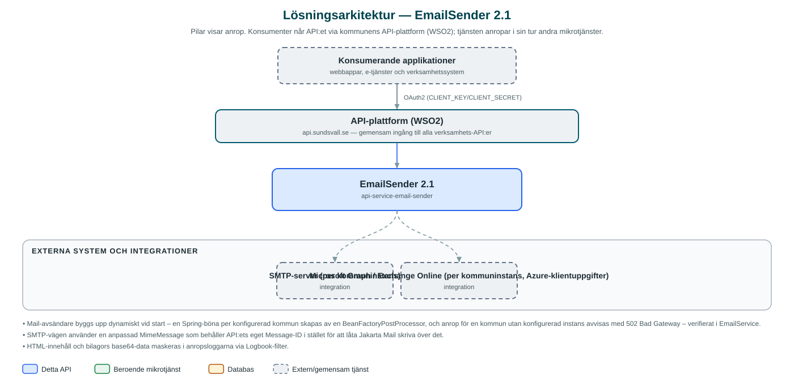

EmailSender
Skickar e-post åt kommunens applikationer, via SMTP eller Microsoft Graph beroende på hur respektive kommun är konfigurerad.
Om API:et
EmailSender är kommunens gemensamma utskickstjänst för e-post. Applikationer anropar detta API med avsändare, mottagare, ämne och innehåll i stället för att själva hantera e-postservrar och autentisering. Tjänsten används i praktiken mest indirekt, via Messaging-API:et som routar e-postutskick hit.
Tjänsten konfigureras med en e-postinstans per kommun (municipalityId), och varje instans kan skicka antingen via en klassisk SMTP-server eller via Microsoft Graph (Exchange Online i Azure). Det gör att olika kommuner i samarbetet kan använda olika e-postmiljöer bakom samma API.
Ett utskick kan innehålla både text- och HTML-innehåll (HTML som base64), bilagor, kopiemottagare och egna e-posthuvuden som In-Reply-To, References och Auto-Submitted – det senare används för att märka automatiska utskick korrekt. Tjänsten är tillståndslös och lagrar ingenting om skickade meddelanden.
Det här gör API:et
- Skicka e-post – Ett anrop med avsändare, mottagare, ämne, meddelandetext och eventuell HTML-version skickar ett e-postmeddelande.
- Två leveransvägar – Varje kommuninstans skickar via SMTP eller via Microsoft Graph (Exchange Online) – valet styrs helt av konfigurationen.
- Bilagor – Filbilagor skickas med som base64-kodat innehåll med angiven filtyp och filnamn.
- Egna e-posthuvuden – Stöd för huvuden som In-Reply-To, References och Auto-Submitted, till exempel för att tråda svar och märka maskinellt skickad e-post.
- Svarsadress och kopior – Avsändaren kan ange separat reply-to-adress; saknas den används avsändaradressen. Kopiemottagare (CC) stöds.
API-dokumentation
API:ets samtliga resurser, parametrar och datamodeller finns beskrivna i en OpenAPI-specifikation som är hämtad ur källkodsförrådet. Den kan utforskas interaktivt i Swagger UI eller laddas ner som YAML. Programvaruförteckningen (SBOM) listar tjänstens samtliga tredjepartskomponenter med version och licens.
Teknisk dokumentation
Nedan beskrivs hur tjänsten är uppbyggd, vilka andra tjänster den anropar och vad som krävs för att driftsätta den. Informationen är härledd ur källkoden och dess konfiguration på GitHub.
Arkitektur

API:et är en mikrotjänst (Java 25, Spring Boot via kommunens gemensamma tjänsteplattform dept44 (8.0.8), byggd med Maven). Konsumenter når tjänsten via kommunens gemensamma API-plattform (WSO2) på api.sundsvall.se – tjänsten anropas aldrig direkt. Övriga integrationer som förekommer i koden: SMTP-server (per kommuninstans), Microsoft Graph / Exchange Online (per kommuninstans, Azure-klientuppgifter).
Teknikstack
- Språk: Java 25
- Ramverk: Spring Boot via kommunens gemensamma tjänsteplattform dept44 (8.0.8), byggd med Maven
- Övrigt: Microsoft Graph SDK och Azure Identity för Graph-utskick, Jakarta Mail för SMTP, Logbook för anropsloggning
Beroenden till andra mikrotjänster
Inga anrop till andra mikrotjänster hittades i källkodens konfiguration.
Programvaruförteckning
Tjänsten bygger på 235 tredjepartskomponenter fördelade på 13 olika licenser. Till skillnad från tabellen ovan, som listar andra mikrotjänster, avses här de programbibliotek som ingår i bygget. Se programvaruförteckningen för hela listan.
Konfiguration och driftsättning
- En e-postinstans per kommun under integration.email.instances.<municipalityId>
- SMTP-instans: host, port (standard 25), eventuellt användarnamn/lösenord och extra mail-properties
- Microsoft Graph-instans: tenant-id, client-id, client-secret och scope (standard https://graph.microsoft.com/.default)
- Gemensamma standard-mailproperties (auth, starttls, teckenkodning) i application.yml
- Anrop görs per kommun – municipalityId ingår i API-vägen
Noterbart ur källkoden
- Mail-avsändare byggs upp dynamiskt vid start – en Spring-böna per konfigurerad kommun skapas av en BeanFactoryPostProcessor, och anrop för en kommun utan konfigurerad instans avvisas med 502 Bad Gateway – verifierat i EmailService.
- SMTP-vägen använder en anpassad MimeMessage som behåller API:ets eget Message-ID i stället för att låta Jakarta Mail skriva över det.
- HTML-innehåll och bilagors base64-data maskeras i anropsloggarna via Logbook-filter.
- README:s formulering om databasinitialisering är boilerplate – tjänsten har ingen databas alls.
- Tjänsten saknar interna mikrotjänstberoenden; katalogen src/main/resources/integrations finns inte i detta repo.
Källkod
Källkoden är öppen och finns hos Sundsvalls kommun på GitHub. I källkodsförrådet finns även instruktioner för att klona, konfigurera och starta tjänsten i egen miljö.